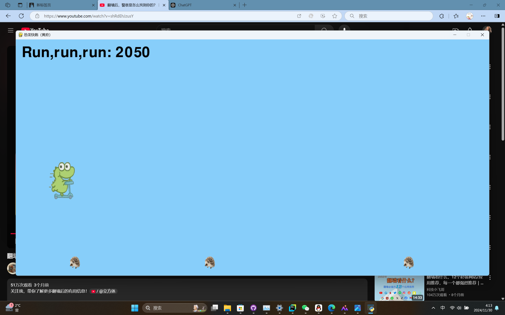
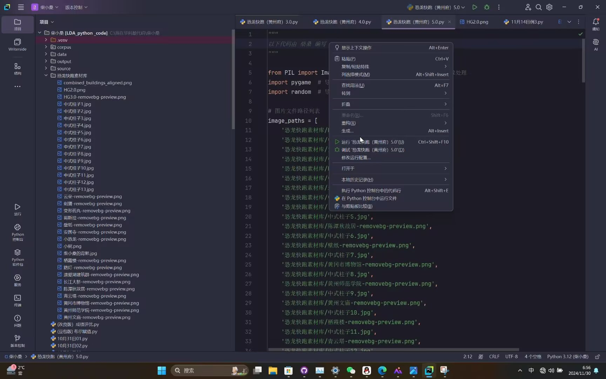
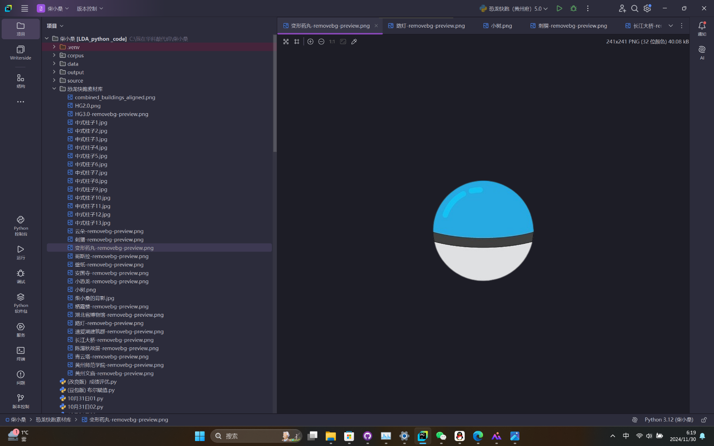
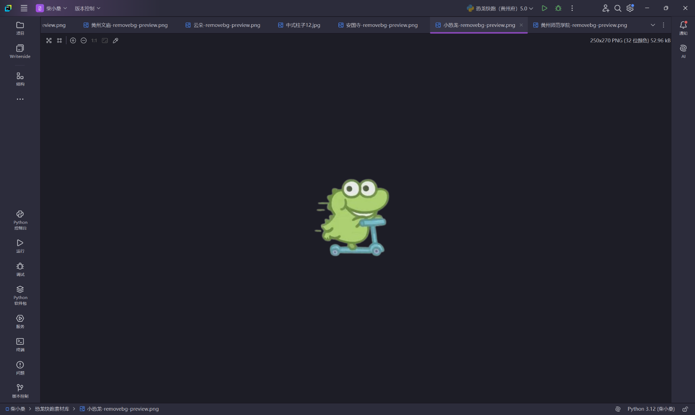
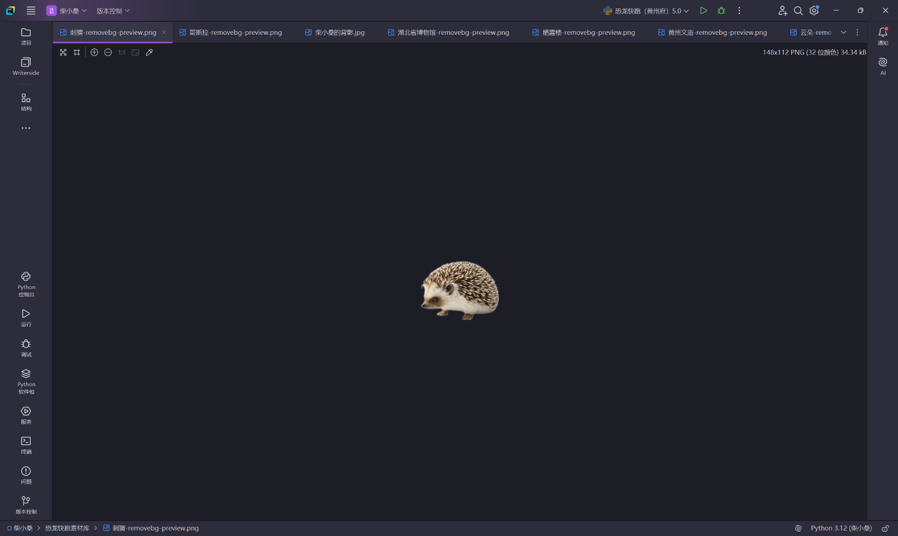

Journal · 2024-11-30
湖北省武汉市
恐龙快跑(黄州府)5.0版正在调试：
1.删除“路灯”“云朵”元素；
2.背景图改为“黄州府十二建筑”、十三个中式柱子以及一张“作者的背影”；
3.“小恐龙”可以左右移动了；
4.背景图和障碍物“小刺猬”的循环滚动速度将越来越快！
-手动分割线-
Pycharm中的“纠错提醒”真得不够形象直观，程序中的第15行代码少了个英文逗号，它告诉我第34行和第3277行有错误（总共就231行代码）。
若想复制粘贴，请关注：
https://github.com/NewtNorlly/ChaiXiaosang
这个仓库的主人就是柴桑
黄炜 : 帅哥以后作游戏发售，我一定买






Dinosaur Run (Huangzhou Prefecture) version 5.0 is being debugged:
1. Remove the “streetlight” and “cloud” elements;
2. Change the background image to the “Twelve Buildings of Huangzhou Prefecture”, thirteen Chinese-style pillars, and a “photo of the author’s back”;
3. The “little dinosaur” can now move left and right;
4. The scrolling speed of the background image and the obstacle “little hedgehog” will get faster and faster!
-manual divider-
The “error reminder” in PyCharm is really not intuitive enough: the code is missing an English comma on line 15, but it tells me there are errors on lines 34 and 3277 (the code has only 231 lines in total).
If you want to copy and paste, please follow:
https://github.com/NewtNorlly/ChaiXiaosang
The owner of this repository is Chai Sang
Huang Wei : Handsome guy, when you release the game in the future, I will definitely buy it
Dino Run (préfecture de Huangzhou) version 5.0 est en cours de débogage :
1. Supprimer les éléments “réverbère” et “nuage” ;
2. Remplacer l’image de fond par les “douze bâtiments de la préfecture de Huangzhou”, treize piliers de style chinois et une “photo du dos de l’auteur” ;
3. Le “petit dinosaure” peut maintenant se déplacer à gauche et à droite ;
4. La vitesse de défilement de l’image de fond et de l’obstacle “petit hérisson” sera de plus en plus rapide !
-séparateur manuel-
Le “rappel d’erreur” dans PyCharm n’est vraiment pas assez intuitif : il manque une virgule anglaise à la ligne 15 du code, mais il me dit qu’il y a des erreurs aux lignes 34 et 3277 (alors que le code ne compte que 231 lignes au total).
Si vous voulez copier-coller, veuillez suivre :
https://github.com/NewtNorlly/ChaiXiaosang
Le propriétaire de ce dépôt est Chai Sang
Huang Wei : Beau gosse, quand tu sortiras le jeu, je l’achèterai sûrement
Dino Run (Präfektur Huangzhou) Version 5.0 wird gerade debuggt:
1. Die Elemente “Straßenlaterne” und “Wolke” entfernen;
2. Das Hintergrundbild durch die “zwölf Gebäude der Präfektur Huangzhou”, dreizehn chinesische Säulen und ein “Foto vom Rücken des Autors” ersetzen;
3. Der “kleine Dinosaurier” kann sich jetzt nach links und rechts bewegen;
4. Die Scrollgeschwindigkeit des Hintergrundbilds und des Hindernisses “kleiner Igel” wird immer schneller!
-manuelle Trennlinie-
Die “Fehlererinnerung” in PyCharm ist wirklich nicht anschaulich genug: In Zeile 15 des Codes fehlt ein englisches Komma, aber es sagt mir, dass es Fehler in Zeile 34 und 3277 gibt (obwohl der Code insgesamt nur 231 Zeilen hat).
Wenn du es kopieren und einfügen möchtest, folge bitte:
https://github.com/NewtNorlly/ChaiXiaosang
Der Besitzer dieses Repositories ist Chai Sang
Huang Wei : Hübscher, wenn du das Spiel später veröffentlichst, kaufe ich es bestimmt